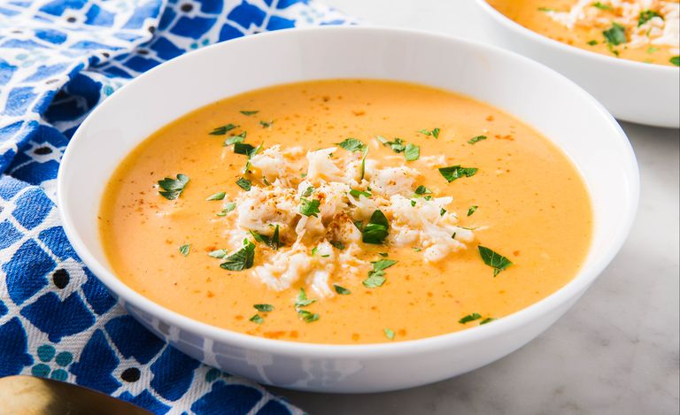

Ingredients
- 3 tablespoons of butter
- 2 tablespoons of chopped green onion
- 3 tablespoons of flour
- 2 1/2 cups of milk
- 1/2 teaspoon black pepper seasoning
- 1 tbsp of tomato paste
- 1 cup whipping cream
- 8 oz baby shrimp and crab meat
- 2 tbsp sherry wine
- Chopped parsley and/or cilantro
Directions
- Gather your ingredients
- melt butter in a large saucepan over
medium heat; add chopped onion and or celery
and stir until tender
- Blend the flour
- Warm the milk in another saucepan over medium
flame
- Add the milk in with the flour/vegetable mixture
and stir until thickened
- add the black pepper,tomato paste, and heavy
cream
- Bring the oven to simmer
- Add the shrimp,crab, and sherry wine
-
Enjoy!
Recipe Source
Contact me
The University of Montana
32 Campus Dr
Missoula, MT 59812